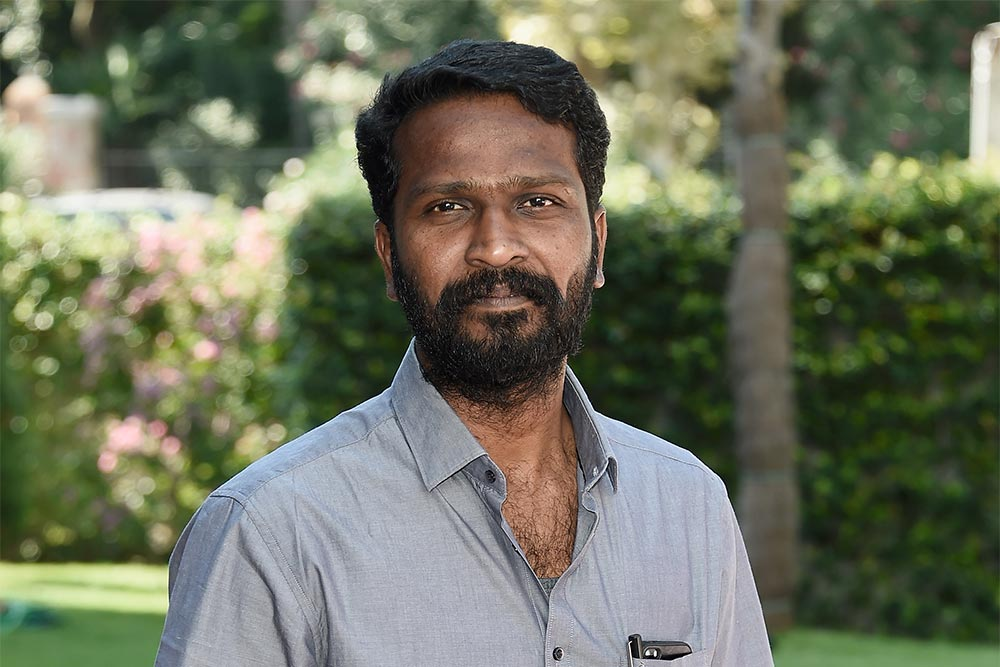

|  |
Vetrimaaran’s father Dr. V. Chitravel was a veterinary scientist and his mother Megala Chitravel is a noted novelist. He was born in Cuddalore. He then moved to Ranipet, a suburb of Vellore. He studied up to his tenth grade in Ranipet.
n 1999, Vetrimaaran worked as an assistant director for Kadhai Neram for Sun TV by Balu Mahendra, featuring 52 short stories for 52 episodes. In a team of 4-5 assistant directors, Vetrimaaran read around 50-60 short stories in a week and shortlist a few and present the synopsis to Balu Mahendra, who would select the required storyline. After Kadai Neram, he went on to work with Kadhir in Kadhal Virus for 2 years, whilst also working with Balu Mahendra for Julie Ganapathy and then Adhu Oru Kana Kaalam. At the time, he prepared a script for Dhanush, who has the lead hero of the films he worked in, and Dhanush immediately accepted the offer after hearing the story. The film titled Desiya Nedunchalai 47 was initially launched with Yuvan Shankar Raja as the music director and Ekambaram as the cinematographer. After he found trouble finding producers with A. M. Rathnam and Salem Chandrasekhar leaving the project after initial interest, Dhanush’s sister Dr. Vimala Geetha agreed to produce the film, but she also dropped the film. Dhanush’s father Kasthuri Raja finally agreed to produce the film and Kirat Bhattal was signed as heroine, while Harris Jayaraj was selected as music director. However, after two days of shoot the film was shelved and Dhanush opted to pursue other films after the surprise success of his Thiruvilayadal Arambam. The film’s collapse saw Vetrimaaran approach producer Kadiresan and narrated to him the stories he had prepared but the producer did not like Desiya Nedunchaalai 47, but agreed to work on another project titled Polladhavan. Vetrimaaran has since described that he had “ample time” for he production works of Polladhavan as “Dhanush had confidence in him”. Production designer Durai helped him rope in G. V. Prakash Kumar to score the film’s music, while Dhanush also recommended cinematographer Velraj to Vetrimaaran after the pair had worked together in Parattai Engira Azhagu Sundaram. Vetrimaaran chose Kannada language actor Kishore to make his Tamil film debut after his assistant gave him rave reviews of the actor’s performance in the unfinished Prashanth-starrer Petrol. The team held test shoots with both Kajal Aggarwal and Poonam Bajwa for the film and released the stills to the media, but Vetrimaaran was still unsatisfied and finished two schedules before finalising on Divya Spandana. The director revealed that there was initially an issue with the actress after she got offended by his words and did not come for the shoot for three days, before Durai intervened. The film’s story was inspired partly by the lost bike of his friend Andrew and the variety of experiences he had tracking down his vehicle. Vetrimaaran revealed that when he wrote the script, he made many changes to suit the visual medium and for Dhanush on his physical attributes while playing an action hero. The film opened in November 2007 to rave reviews, with the critic from Sify.com stating that “Vetri has made his mentor proud, and his style of narration and takings are very similar to the ace director [Balu Mahendra]”, labelling that the film had shades of Vittorio De Sica’s 1948 Italian film, Bicycle Thieves. The reviewer from The Hindu stated that “at no point does Polladhavan sag and that writer-director Vetrimaaran has slogged through his screenplay and the result shows.” The film also emerged successful commercially usurping collections of the Vijay-starrer Azhagiya Tamil Magan and the Suriya-starrer Vel and subsequently went on to win four Vijay Awards including Best Director for Vetrimaaran. Vetrimaaran is currently undertaking pre-production and scripting work for his next directorial venture, Vada Chennai, a tale on the mafia wars of North Chennai. When announced in 2009, Karthi was initially touted to play the lead role, although an official announcement from the producers in 2012 revealed that Silambarasan, Rana Daggubati, Divya Spandana and Andrea Jeremiah would essay pivotal roles in the film. The director also revealed that his fourth venture would see him recombine with Dhanush yet again. Vada Chennai released on 18 October 2018. The film opened to largely positive reviews. In 2012, Vetrimaaran also launched his own production house called the Grass Root Film Company and launched his maiden project, Udhayam – NH47 with Siddharth in the lead role and his associate Manimaran as director.
Following the success of Poladhavan, the entire team of Vetrimaaran, Dhanush, Kishore and producers S. Kathiresan and G. V. Prakash Kumar teamed up again for Aadukalam (2011), a story about a fight between the fighting cocks of Madurai. Did. During the pre-production and scriptwriting stages, Vetrimaaran spent his two years in Madurai to understand the local dialect and the lifestyle of the people living there. Aadukalam was director Vetrimaaran's first film to set up a production office outside Chennai. Vetrimaaran took a year to complete the screenplay, script and dialogues for Aadukalam and kept a limited script for this venture, which is considered rare in Tamil cinema. Vetrimaaran narrated only half of the film's script to Dhanush before Dhanush was impressed with it and agreed to act in the film. The film was originally titled 'Seval', but as director Hari had already acquired the rights to the title for a project with Bharath, Vetrimaaran decided to rename the film 'Aadukalam'. The film was in production hell for two years due to constant cast changes. , the crew and location changed, but Vetrimaaran, Dhanush, Kishore, Kathiresan and G. V. Prakash Kumar remained. Vetrimaaran introduces two newcomers, Taapsee Panu, who is making her debut in Tamil, and V.I.S. Jayapalan, a Sri Lankan Tamil writer and political commentator, and introduces Vetrimaaran's future collaborators Dinesh, Murugadoss, and Naren. made a breakthrough through this film. After its release, Aadukalam received critical acclaim and was a commercial success. Sifai called the film a "brave and brilliant film" and said, "It has lived up to the expectations this film has raised and Vetrimaran is to be commended for his research and hard work coming to the screen." In 2012, Vetrimaran started his own production company. He joined Grass Root Film Company and launched his maiden project 'Udhayam NH4' (2013) starring Siddharth and his colleague Manimaran as director. He wrote the dialogues for debutant Prithvi Rajkumar's Naan Rajavaga Pogilen (2013). In 2014, his film Poriyaalan, a kind of brother to Poladhavan, was released and received critical acclaim. In 2015, the children's film Kaaka Muttai (2015), directed by Manikandan and co-produced by Dhanush's Wonderbar Films and Grassroots Film Company, received critical acclaim from all over India and won Best Picture at the 62nd National Film Awards. It won the Children's Film Award.
Following the success of Poladhavan, the entire team of Vetrimaaran, Dhanush, Kishore and producers S. Kathiresan and G. V. Prakash Kumar teamed up again for Aadukalam (2011), a story about a fight between the fighting cocks of Madurai. Did. During the pre-production and scriptwriting stages, Vetrimaaran spent his two years in Madurai to understand the local dialect and the lifestyle of the people living there. Aadukalam was director Vetrimaaran's first film to set up a production office outside Chennai. Vetrimaaran took a year to complete the screenplay, script and dialogues for Aadukalam and kept a limited script for this venture, which is considered rare in Tamil cinema. Vetrimaaran narrated only half of the film's script to Dhanush before Dhanush was impressed with it and agreed to act in the film. The film was originally titled 'Seval', but as director Hari had already acquired the rights to the title for a project with Bharath, Vetrimaaran decided to rename the film 'Aadukalam'. The film was in production hell for two years due to constant cast changes. , the crew and location changed, but Vetrimaaran, Dhanush, Kishore, Kathiresan and G. V. Prakash Kumar remained. Vetrimaaran introduces two newcomers, Taapsee Panu, who is making her debut in Tamil, and V.I.S. Jayapalan, a Sri Lankan Tamil writer and political commentator, and introduces Vetrimaaran's future collaborators Dinesh, Murugadoss, and Naren. made a breakthrough through this film. After its release, Aadukalam received critical acclaim and was a commercial success. Sifai called the film a "brave and brilliant film" and said, "It has lived up to the expectations this film has raised and Vetrimaran is to be commended for his research and hard work coming to the screen." In 2012, Vetrimaran started his own production company. He joined Grass Root Film Company and launched his maiden project 'Udhayam NH4' (2013) starring Siddharth and his colleague Manimaran as director. He wrote the dialogues for debutant Prithvi Rajkumar's Naan Rajavaga Pogilen (2013). In 2014, his film Poriyaalan, a kind of brother to Poladhavan, was released and received critical acclaim. In 2015, the children's film Kaaka Muttai (2015), directed by Manikandan and co-produced by Dhanush's Wonderbar Films and Grassroots Film Company, received critical acclaim from all over India and won Best Picture at the 62nd National Film Awards. It won the Children's Film Award.